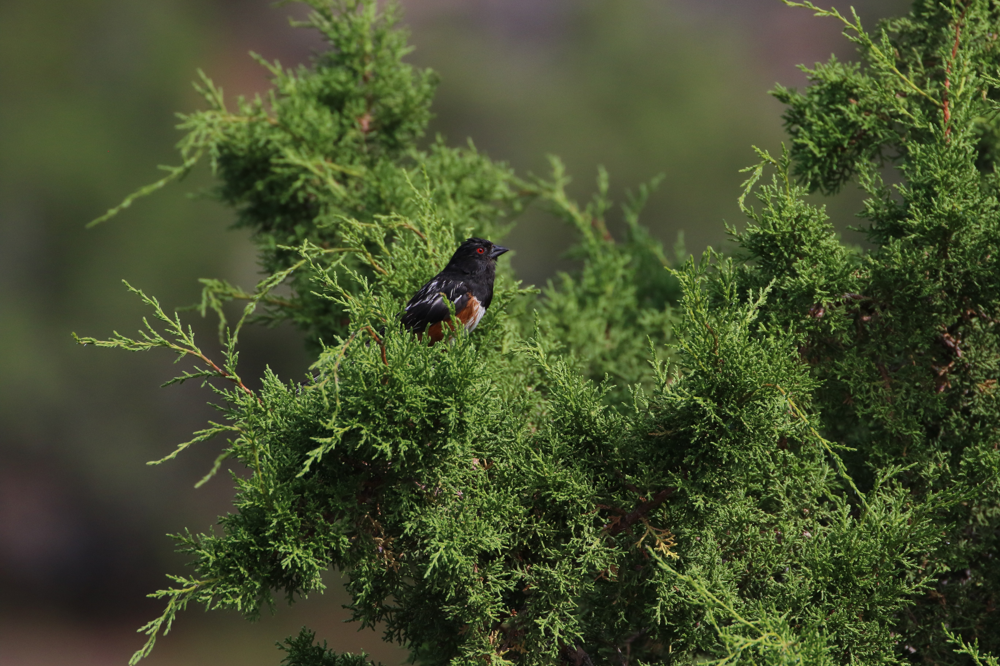
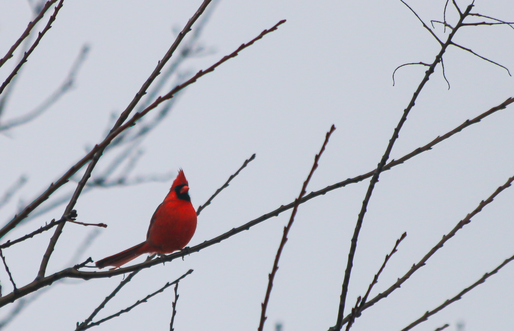
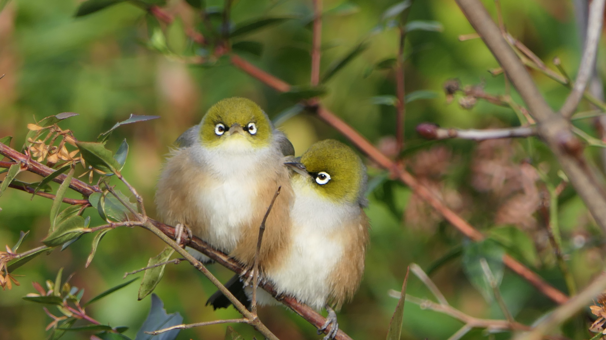
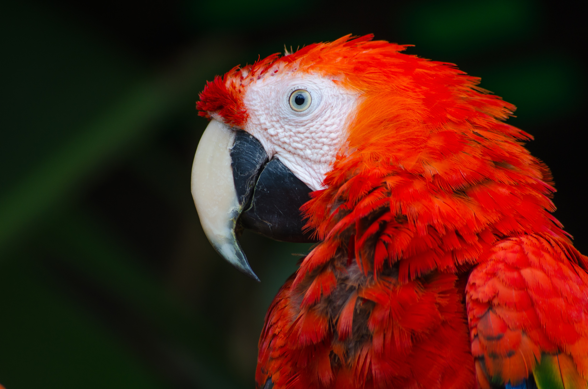
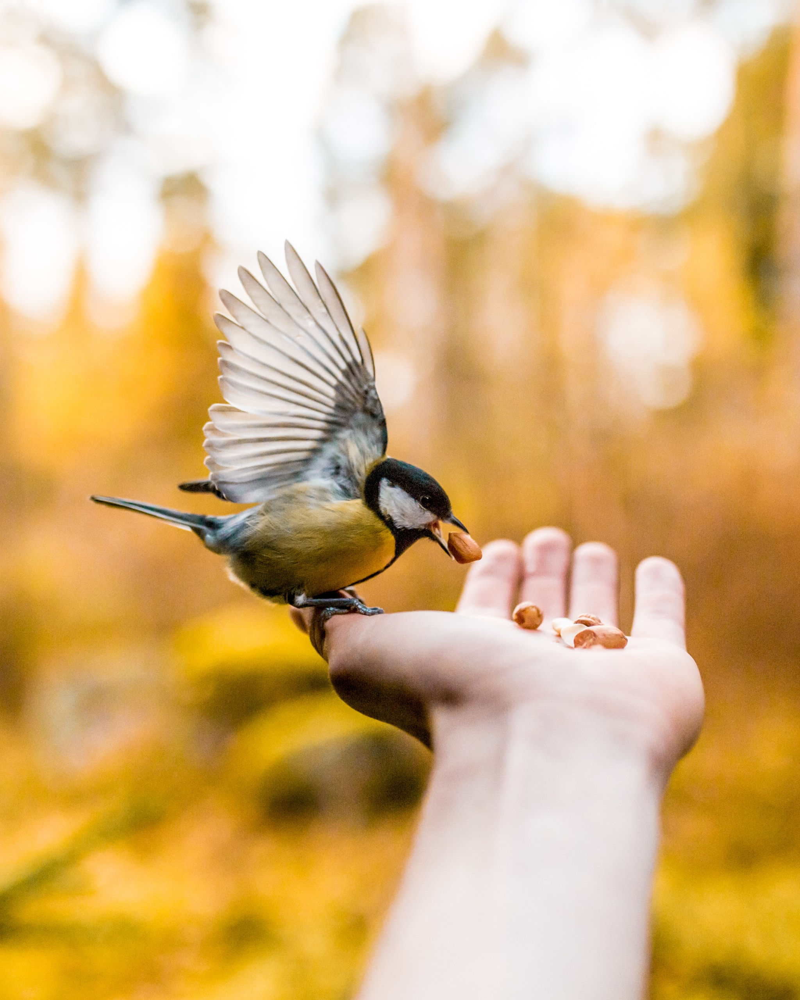
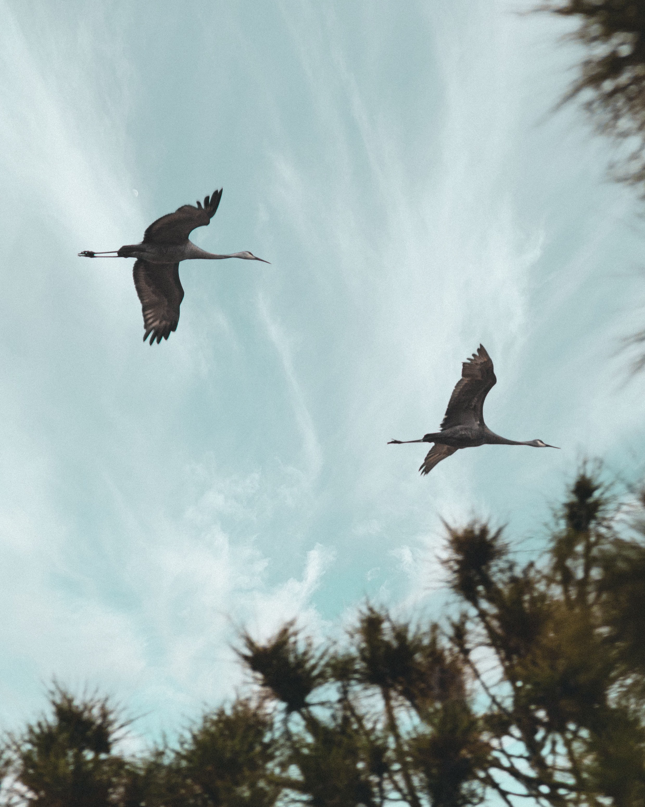
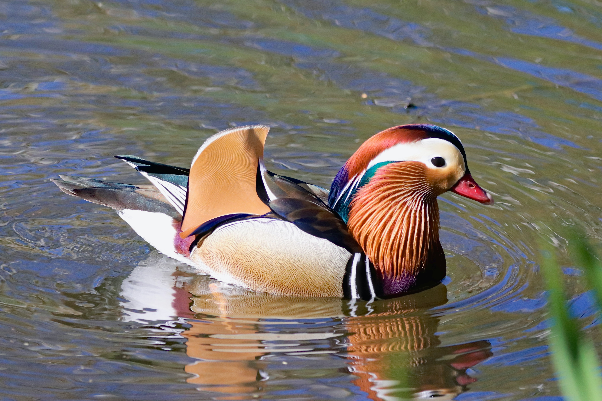
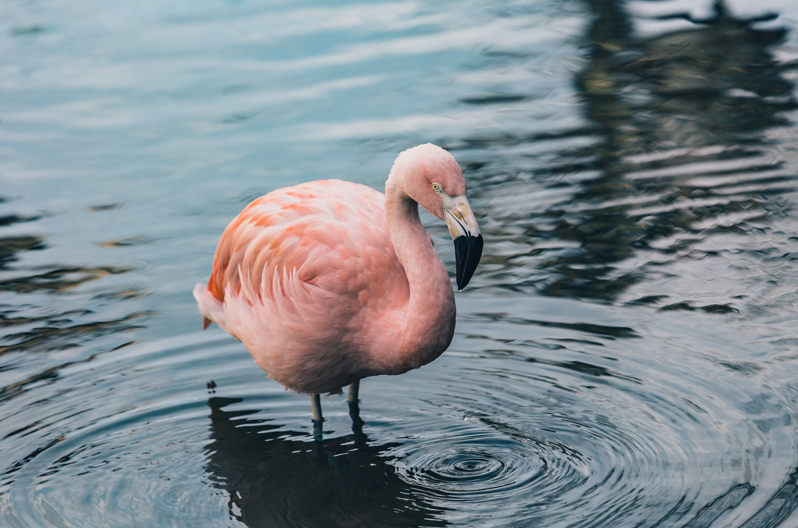

(also Hawaiian thrush)

[Illustration: OMAO]
DESCRIPTION: 7″. Usually heard first, then seen if you are patient, for
it often remains motionless. A medium sized gray-brown thrush with no
distinct markings. Only similar species is the Chinese thrush which is
larger, more reddish brown, and has white markings around the eye.
PARK DISTRIBUTION: Kilauea—Moderately common in the wet ohia forest,
especially along the Crater Rim Trail between Park Headquarters and
Thurston Lava Tube. Uncommon on lava flows between 7,000 and 9,200 feet
elevation—to be seen along the Mauna Loa trail. Haleakala—Absent from
Maui.
VOICE: Any one of several buzzing notes, a medium pitched _eéau_, or
_prueeé_, or a low throaty _whuaaá_ are likely to be heard before the
song. These notes may be interspersed and are often repeated many times
with a few seconds interval. The song is a rapid, erratic whistled
phrase, having the loud fluty quality of other thrushes.
This strange thrush lives in two contrasting habitats within Hawaii
Volcanoes National Park. In the dense forest you will usually find it
singing from its perch part way up an ohia or other tree. But there may
be no trees in sight at its other locality which is among the barren
lava flows on Mauna Loa. However, there will always be berry bushes
nearby—ohelo, pukeawe, or kukaenene; and insects also comprise a part of
the diet. The lava flow birds establish day-time roosts on the higher
rocks and remain at these sites for long periods, judging from the
accumulation of droppings. Old perch sites stand out clearly on a flow,
for a yellow-green lichen colors the top of whatever rocks have been
plastered with omao droppings.
[Illustration: _Ohelo—favorite food of the omao_]
The nesting sites for these birds have remained an enigma until
recently. Now it is known that birds living on the flows will build
their nests on ledges within deep horizontal lava cracks, especially in
collapsed lava tubes, while the forest birds are said to nest in trees.

[Illustration: ELEPAIO]
DESCRIPTION: 5½″. A brownish flycatcher with variegated black, white,
and gray markings. The dark bill is short (½ inch) and nearly straight.
The female has less black on the breast and throat, while immatures,
generally more brown, have a reddish instead of a white ruff around the
vent. Its friendly wrenlike actions combined with the above make it
unmistakable.
PARK DISTRIBUTION: Kilauea—Common in the more heavily vegetated areas
around Kilauea Crater and to the east. Look for it at Kipuka Puaulu.
Haleakala—Absent from Maui.
VOICE: A variety of short songs or calls. One is like a “wolf whistle”,
a clear _wheé-oo_ (or _elepaí-o_). Another is a nasal _yeékik_. A single
_wheek_ as well as short nasal chirps are also common.
The elepaio is probably the friendliest of our native birds. It is
easily overlooked, since it usually remains fairly quiet when you first
approach, but if you pause for a few moments in the wet fern jungle, one
or more of these birds are likely to appear. They seem very inquisitive
as they hop about in the low underbrush, often within a few feet of an
observer, and they cock their tails high whenever they alight. Like the
omao these birds often push their wings forward with a rapid shivering
motion when confronted by people, probably a type of aggressive action.
Being a member of the Old World flycatcher family, the elepaio is
adapted to an insect diet which it gleans from the tree tops to the
ground, but mostly in the understory. It often feeds like a creeper,
carefully working up or down the trunk of an ohia in search of insect
life. There seem to be no seasonal movements; individuals or family
groups of two to four birds apparently remain in the same general area
throughout the year.
(also mejiro)

[Illustration: WHITE-EYE]
DESCRIPTION: 4½″. A tiny yellow-green bird with a distinct _white
eye-ring_. Its back and wings are green, the throat yellow, and under
parts gray; the bill is thin and straight. Only other common small green
bird is the amakihi, which has no white around the eyes. Immatures are
duller, and the eye-ring, although present, is less distinct.
PARK DISTRIBUTION: Introduced from Japan in 1929. Now widely established
on all islands. Kilauea—Common almost everywhere in the park.
Haleakala—Fairly common throughout the park, except at the highest
elevations or in the barren portions of the crater.
VOICE: A thin, high-pitched song a bit like that of the house finch, but
much higher and not as loud. Note: a high _tsee_ or _chee_ given
repeatedly.
You will hear a rapid chittering of high notes as a flock of three or
four white-eyes fly into the nearby shrubbery. Notice how quickly they
work over the foliage and limbs gleaning tiny insects. They continue to
utter their notes as they feed, but soon one by one they are off again
to new vegetation.
The pattern of population increase for the white-eye has paralleled that
of many exotic species. Following their introduction in 1929 the birds
were at first slow to increase their range, but in more recent years a
population explosion has taken place ... on the Island of Hawaii, at
least. It is presently the commonest bird on the island and it seems to
have adapted to nearly every habitat. There is every indication that the
white-eye, competing for insects with native Hawaiian birds such as the
Hawaiian creeper, has virtually eliminated some of the natives from
their former habitat.

[Illustration: AMAKIHI(male)]
DESCRIPTION: 4½″. Yellow-green with no outstanding markings, and a dark
slightly downcurved bill. The male is bright green above with a
yellowish breast, while the female and immatures are duller, tending
toward gray-green. It is a real problem to distinguish between a female
or young amakihi and the very rare Hawaiian creeper (next bird).
PARK DISTRIBUTION: Kilauea—Very common on the slopes of Mauna Loa around
tree-line (for example along the Mauna Loa trail); less common in the
wet ohia forests around Kilauea Crater and along the Chain of Craters
road. Haleakala—Common in the open forests such as Hosmer Grove and
Paliku.
VOICE: The usual song, a slow tinkling trill,
_tink-tink-tink-tink-tink-tink-tink_ or _wheedle-wheedle-wheedle_, etc.,
is uttered by the male. Commonest foraging note (both sexes) is a high
_djeee_; another note is _wheee_ with a rising inflection.
You will see a little green bird flit into a mamani or other nearby tree
and begin to seek insects among the foliage, visiting the blossoms for
nectar if the tree happens to be in bloom. You hear a buzzy _djeee_ and
you have made acquaintance with the amakihi. This Hawaiian honeycreeper
prefers more open forest than do the other two common members of the
family, the apapane and iiwi. But often all three are found together,
with the amakihis working through the entire foliage and not just in the
tree tops.
Seasonal movements are much less obvious than for either apapanes or
iiwis, probably because amakihis are less dependent on flowering
periods. However, some migration does occur, especially in and out of
their lower range below 3,000 feet elevation. Nesting is in late spring
and early summer.

(also Hawaiian short-eared owl)
DESCRIPTION: 14″-15″. A medium-sized owl of buffy brown color and with
small ear tufts. In flight it appears big-headed and neckless compared
to the io.
PARK DISTRIBUTION: Kilauea—Occasional around the crater and in grassy
areas on the Mauna Loa Strip. Haleakala—Occasional near meadows inside
the crater such as at Paliku; also on the lower slopes, especially just
below Park Headquarters. They are frequently seen on the drive up to the
park.
VOICE: Rarely heard muffled barking sounds.
You may be surprised to see an owl soaring hawklike over grassy openings
in full daylight. However, this Hawaiian race of the mainland
short-eared owl is often diurnal. It will hover over one spot until a
mouse or rat ventures out into the open, then with a swoop the pueo
captures its meal.

[Illustration: SKYLARK]
DESCRIPTION: 7″. A nondescript buffy, streaked bird with _white outer
tail feathers_ found only in open country. The head may appear crested.
PARK DISTRIBUTION: Introduced early to most of the islands.
Kilauea—Fairly common in open grassy places, for example on the floor of
Kilauea Crater or along the Mauna Loa Strip. Haleakala—Fairly common
both inside and out of the crater.
VOICE: Look to the sky when you hear an exceedingly long, high-pitched
rolling song. The skylark sings while on the wing and its beautiful
music may last for a minute or longer.
Certainly the most remarkable thing about this bird is its song—which it
delivers while hovering sometimes hundreds of feet in the air. Just when
you think that the lofty music must end, a skylark will change to a new
series of phrases and keep this up for another minute or so. Skylarks
feed and nest on the ground. Nests attributed to skylarks made entirely
of “Pele’s hair” have been found in the Kilauea area. “Pele’s hair” is
spun volcanic glass formed during an eruption—a strange material indeed
for the construction of a bird’s nest.
(also spectacled thrush)

DESCRIPTION: 9″. In the dense wet forests a large, reddish-brown bird
with _broad white “eye spectacles”_ can only be this species. The white
band around each eye extends backward to the ear. You will probably hear
this bird before seeing it.
PARK DISTRIBUTION: Introduced at the turn of the century. Now on all
major islands. Kilauea—Occasional in the wet ohia forest such as around
Park Headquarters. Haleakala—Absent from the park.
VOICE: A mockingbird-like series of sustained musical and harsh notes
that carries for a great distance. The rich phrases may be repeated
several times before a new pattern is given.
These secretive birds seem to make a vertical migration to Kilauea from
the east each summer. They are rarely observed in the park during winter
months, but that may be due to their lack of song in the non-breeding
season. In summer you will probably hear several before seeing even one,
as they are wary and keep to the underbrush, moving about very little.
(also Japanese hill robin or Peking nightingale)

[Illustration: RED-BILLED LEIOTHRIX]
DESCRIPTION: 5½″. One of the easiest to identify: An olive-green bird
with contrasting red and yellow markings and a _bright red-orange bill_.
The back is olive-green, throat lemon-yellow shading to red-orange in
the breast, and the wing varied with yellow, orange, crimson, and black.
Immatures are not as bright, but have the same general markings.
PARK DISTRIBUTION: Introduced to the islands from Asia mainly in the
twenties. Kilauea—Very common throughout vegetated areas.
Haleakala—Fairly common in areas of dense vegetation such as Paliku.
VOICE: No wonder these birds are sometimes called “robins”, for their
robinlike warbled song fills the air in spring and summer. If you
approach they will often begin their excited noisy call notes, a rapid
_bzzt-bzzt-bzzt_, etc., which will usually continue for some time as the
birds nervously flit about the underbrush. Another common note, usually
heard from a distance, is a sharp _wheek-wheek-wheek_ made up of 3-8
notes.
The leiothrix is strictly a bird of the undergrowth and you are likely
to find it wherever there is plenty of bush cover in moist forested
areas. Mamake, a Hawaiian nettle, is one of its favorite haunts. If one
bird is seen, there are probably several others nearby, and flocks of a
dozen or more are common in fall and winter. Fruit, seeds, and insects
comprise the food.
These birds have strange migration habits. In the fall and early winter
large flocks may suddenly appear at the summit of Haleakala where they
stay a short time and then return to lower areas. On Hawaii flocks have
been recorded at above 13,000 feet on Mauna Loa during this season, but
they are reduced by deaths caused by exposure and starvation on the
barren slopes if they do not descend soon.
Although today the leiothrix is one of the best loved birds on the
islands, its introduction here may have been unfortunate. It is known to
be a carrier of bird malaria, a disease that has probably contributed to
the continuing decline of native Hawaiian honeycreepers.